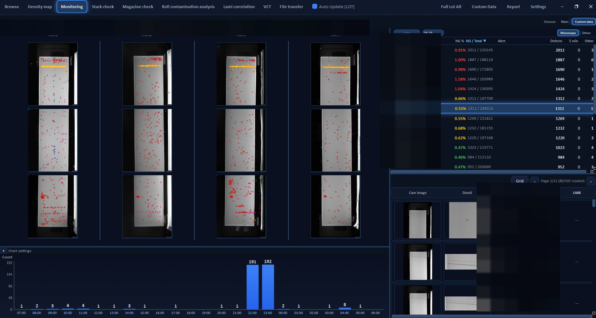
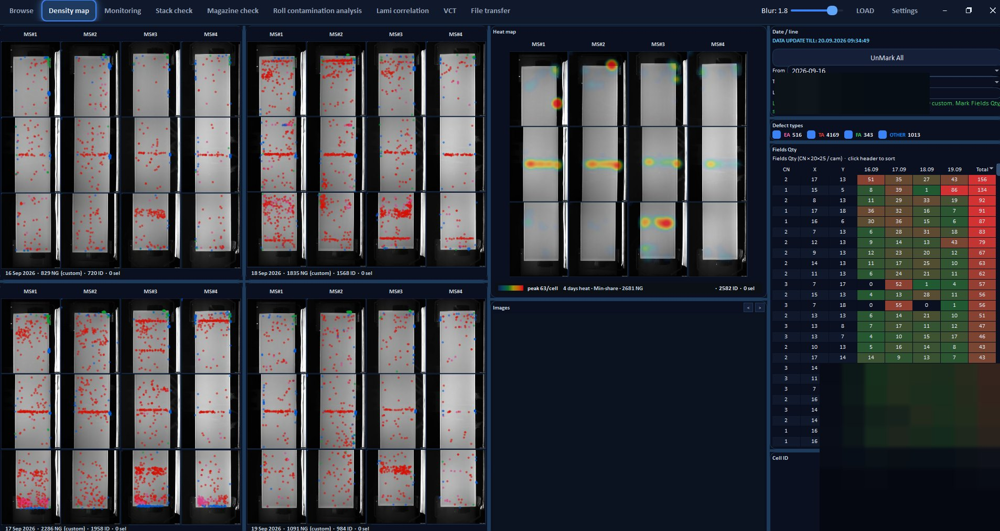

Measure
NG rate versus inspected volume, by line and hour, with alert thresholds instead of a static report.
DAVINCI is a desktop analytics workstation I designed for manufacturing quality: live NG monitoring, spatial defect maps, downtime correlation and dimensional root-cause views. This two-page case study is for a data-analyst CV. It shows how I structure KPIs, find clusters, and drill from plant-level rates to a single event.
NG rate versus inspected volume, by line and hour, with alert thresholds instead of a static report.
Defects plotted on camera views and heatmaps, so a spike is a pattern on the product — not only a number in a table.
Stops, sensor flags and dimensional shifts linked in time, so “what happened” can be separated from “where it clustered”.

Monitoring — identifiers redacted (line names, lot numbers, cell IDs).
A shift view built around rate, not raw count: NG% next to inspected volume, so a busy line is not confused with a bad line. Spatial overlays show whether defects are scattered, banded, or pinned to one camera / zone.
The hourly chart answers a basic analyst question — when did the process change — before opening a lot of images. Preview panes keep the path from KPI → example intact.

Density map — line names and cell IDs redacted. Heatmap shows recurring zones, not individual products.
Day-by-day maps make drift visible: a stable scatter versus a repeating band. The heatmap aggregates several days so a one-off lot does not look like a chronic tool mark.
The field grid is a compact crosstab (zone × day). That is the same idea as a pivot in Excel or SQL, placed on the geometry of the part — useful when the question is “is this a position problem or a time problem?”